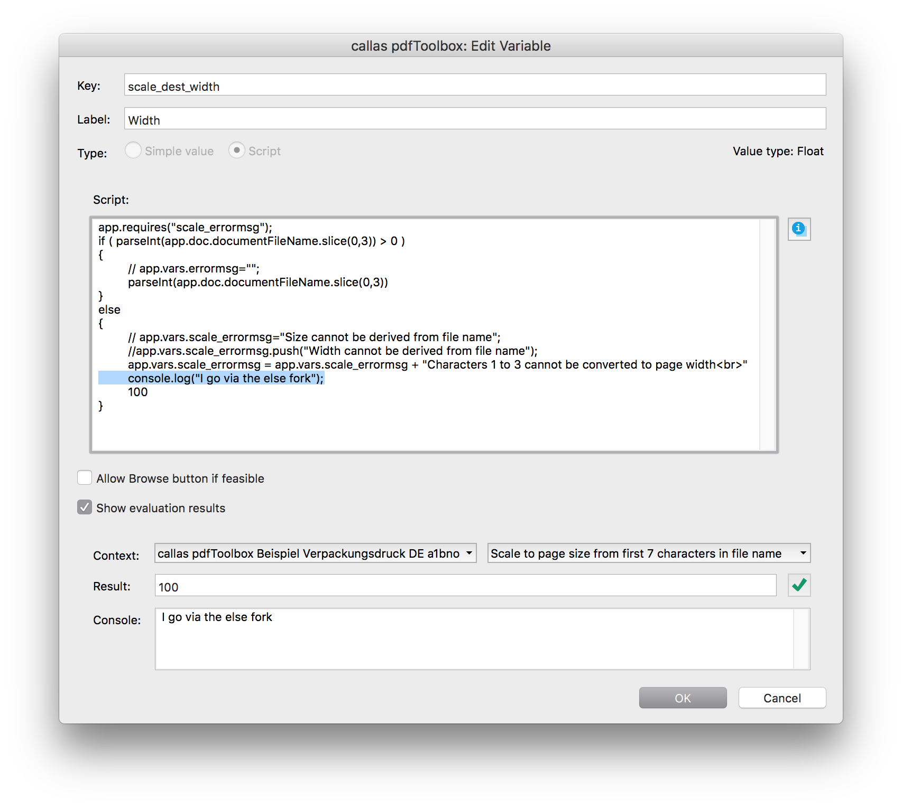
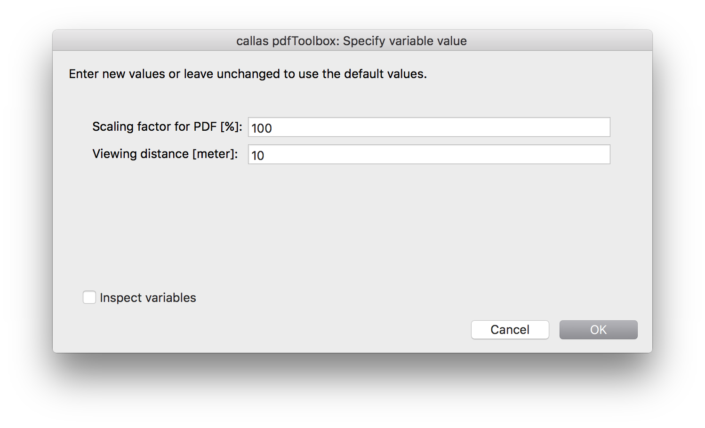
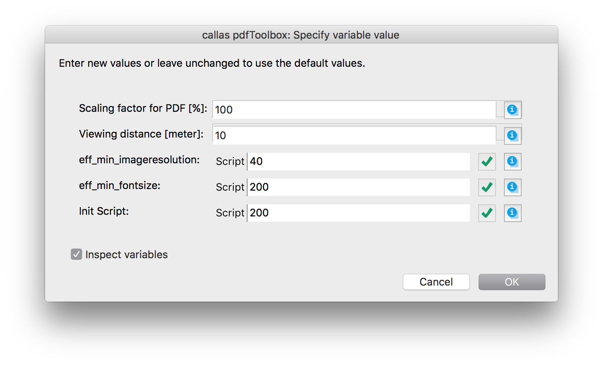
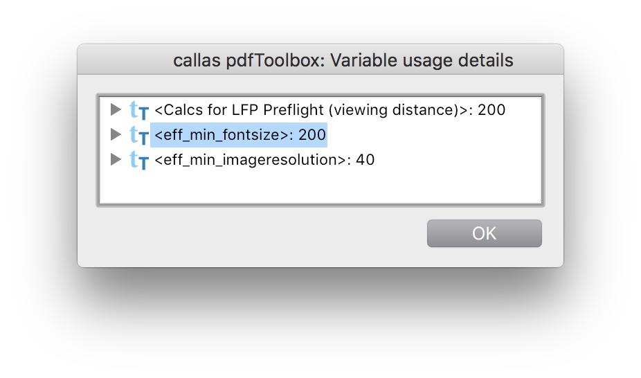

Script variables can be used wherever Simple variables can be used:
It in addition is possible to use Script variables (but not Simple variables):
In all places where Simple or Script variables can be used, the variable editor allows you to switch between both by means of a radio button. After a variable has been saved as Simple variable is is possible at any time to convert it into a Script variable here. However, it is not possible to convert a Script variable into a Simple variable. The reason is that this could potentially lead to problems when the same variable would be used in a place where only a Script variable is allowed.
Wherever you see the variable icon in pdfToolbox Desktop you can click on it in order to assign a variable from a list of all variable keys that are defined in the current Library to the respective control; and you can create a new variable (either as Simple or as Script variable) and assign it; or you open the variable editor in order to modify a variable that has already been assigned.
The list of variables in the pop up shows those variables that are already used in the current context (Profile, Check, Fixup) first and then all variables in the current Library. Script variable keys are followed by "(JS)" to indicate that these are JavaScript variables. After assigning a variable to a pdfToolbox Desktop control the variable key is displayed in the respective field (for text input fields or pop ups) or next to it (for checkboxes). Simple variables are displayed as <Simple variable>, Script variables as {Script variable}.
In order to un-assign a variable from a control you simply have to remove it from a text input field, to pick any other value in a pop up or to check/uncheck a checkbox.
In pdfToolbox versions earlier than version 9 it was possible to copy a variable out of a pdfToolbox Desktop control and insert it into another control in order to assign it to both controls. This is not possible in pdfToolbox 9. You have to select the variable key from the variable pop up in the second or any further control.
From pdfToolbox 9 on it is no more possible to make two variable occurrences using the same value simply by using the same variable name ("key"). Variables are only then the same if any additional occurrence is selected from the variable pop up in pdfToolbox Desktop. Otherwise two variables using the same key would be present which would at least be confusing when evaluated.
But: It would be difficult to resolve such conflicts when a Profile is imported as kfpx file, if the imported Profile uses the same variable key as a variable that is already present in the current Library. Therefore in such cases internally a variable merge process takes place that merges all variables that are defined in the very same way (key, default value and label) into a single variable.
If you want to define a variable in a script that is not used in any pdfToolbox Desktop control you may do so by writing at the top of your script:
app.requires("myvar")
myvar will then be created and show up in the Ask at Runtime dialogue or in --listvariables on command line. If you also want to set a default value and a display name (label) you can write:
app.requires("myvar",100,"Input a value for myvar")
A Script variable is populated with the value that is the result of the last statement in the script. So, if a Script variable would end with a statement like "pdfToolbox" it would have this string as its value, independent from what code has been executed beforehand. A return statement as in a JavaScript function is neither required nor would it have any effect.
It is possible to set a value for another variable in JavaScript code by means of an app.vars.<variable key> statement. The app.vars object is a pdfToolbox object that is available throughout the context (Process Plan, Profile, single Check, single Fixup) in which processing takes place. It allows you to store and retrieve variables within this context:
app.vars.myvar = "pdfToolbox";
or:
localvar = app.vars.myvar;
are valid statements. The first statement would create the variable "myvar" if not already present in app.vars. You may e.g. use app.vars to set a value for a variable on Profile level, which is then used in a Fixup in the Profile.
In order to set a value for a Simple variable you can use app.vars.<variable key>. A list of all variables that are present in the current Library can be displayed in the Script editor by using [<command>-2].
Setting a value for a variable via JavaScript code should only take place on Profile level or as a "Variable" step of a Process Plan. The reason is, that it is not defined in which order scripts on "lower levels" (Checks, Fixups, Severities, On/Off) are executed during runtime and therefore the result of e.g. one Fixup modifying a variable in another Fixup is undefined.
In order to use the value of a variable in JavaScript it can be accessed using the app.vars object with the key of the variable as already described above: app.vars.<variable key>. If the other variable is defined in a Script variable it has to be defined using app.vars there as well. If the other variable is a Simple variable it is always present in the app.vars object.
When retrieving variable values from app.vars it is important to know that all variables are stored there as strings. With simple value types you will most probably not even notice this, because a string is automatically converted if necessary and possible, e.g. into a number. However, if you are working with more complex variable types like with arrays or objects there will obviously be differences and you might have to work around this limitation.
In complex profiles - actually when a Script variable is used in another Script variable - app.requires("<variable key>") has to be defined at the top of the referencing Script, in addition to the actual reference with app.vars. This is required in order to make sure that the referenced variable is evaluated before the referencing variable is calculated. So, it is good practice to at the top of each Script, list all variables which are not defined in the Script itself in app.requires entries.
When you "design" a profile with JavaScript based calculations you have to decide whether you want to put the "intelligence" (the calculations) into Fixups and Checks that actually apply things to the PDF or into a Profile level script and set values for the variables that are then used in Fixups and Checks from there.
Example: Downsample images in pdfToolbox usually requires to set up three fixups: for color images, grayscale images and for bitmap images. Each of the fixups has two input fields that you may want to make variable: The destination resolution and the minimum resolution for an image to be downsampled. Assume that you want to downsample color and grayscale images to the same resolution. Images should be downsampled if the original image resolution is 1.5 times as high as the destination resolution. Destination resolution for bitmap images should be 3 times as high as for color images, with the same relative minimum resolution (effectively 4.5 times color images' minimum resolution). You may now either make the destination resolution for color images a Simple variable, e.g. "dest_col_res" and make any of the other 5 variables a Script variable that uses dest_col_res and calculates the actual value. Or you set up a Profile level script, do all the calculations there and put the results into a bunch of Simple variables that you assign to each of the 6 variable input fields. (You will have to use app.vars in order to use variables throughout the Profile and in the second case you would use app.requires to define a variable for the destination image resolution in the Profile script.)
Each of the two approaches has advantages:
As a result and a rule of thumb it can be said, that it usually makes sense to put as much intelligence into the Profile level script. The more complex a Profile is, the more important is it to follow this approach.
When the variable editor is switched into Script "mode", you can find help with the info button on the upper right side of the Script input field. You will find more information if you click into the Script input field first. This gives you access to
Above of the info button you see the value type of the pdfToolbox control to which the variable is currently assigned. This information is useful to know what type of result is expected from your script.
Below the text input field you can switch "Show evaluation results" on, which will help you to find out what the result of your JavaScript code is.
It is important to remember that the result of JavaScript code used in a variable is the result of the last statement. The only exception is if invalid code is used, e.g. if a closing parenthesis is missing, in which case you will see a "Syntax error" with an explanation.
In order to modify evaluation you can simulate how a JavaScript works different when used in a different "Context": You may either load a PDF (it will not open in pdfToolbox) to simulate how your script works on that PDF, e.g. when you are using the PDF path inside of your script. Or you switch between evaluation only for the script (in which case values that are set via other variables in your context are not evaluated) or evaluation within the context. All this information is helpful for debugging your scripts.
A button at the right hand side indicates whether the result of the script works in the current pdfToolbox control. If the result is "pdfToolbox" and you are using the variable for a text input field you will see a green checkmark. However, if the variable is used for an integer number field you will see a red error cross. When you click on it you will read: ""pdfToolbox" cannot be converted to integer".
The console window displays information that the JavaScript sends to it. It can be used with console.log.
When you run a Process Plan, Profile, Check or Fixup in pdfToolbox Desktop that uses variables you will see the "Ask at Runtime" that allows for updating variable values. A checkbox at the bottom of the dialogue allows the user to "Inspect variables":
 If activated all calculated variables are displayed, not only those ones that allow for user input. A "Script" indicator shows values that cannot be modified in this dialogue because they are already calculated in the scripts. A button behind the Script variable fields indicates whether there is a type conflict, e.g. if the variable is used for a number field but the value is a string that cannot be converted to a number. In that case you will see a red cross. You may click on any of those red cross buttons in order to see details for the problem.
The Ask at Runtime dialogue will only appear if a Profile/Check/Fixup has at least one variable that does not already have a value. If you want to enable the debug view in a Profile/Check/Fixup in which all variable values are set in scripts, you will have to add at least one additional variable, e.g. a Simple variable for that purpose.
Next to each variable you will see an info button. Clicking on this button allows for accessing information that is useful for debugging purposes. A list of all variables that are defined in the current context is displayed. (The content of the info window is actually the same for each of the info buttons, the only difference is that the control for the respective variable is opened by default.) Each of these variables is followed by the result that has been calculated for the respective variable. If you open the triangle for a variable you see an entry "Variables" that shows details about how that variable has been defined. Below are all contexts listed in which the respective variable is used.
pdfToolbox provides a number of objects and methods that can be accessed in JavaScript variables. This includes information about the PDF, like its name or file path, the metadata in the PDF and even results from a previous Check or Profile. You can display a full list of all objects and methods by using [<command>-1] when in the Script editor, select any of the entries and insert them into your script. So, here are only a few very important ones listed, to give you some "feeling" about what you can expect to be there.